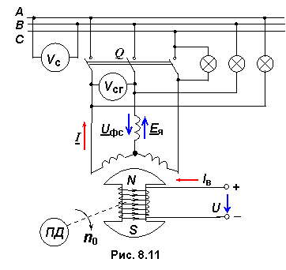

8.4.2. Синхроноскоп
На практике уловить момент включения генератора в сеть довольно трудно, так как частота ЭДС синхронного генератора нестабильна, поскольку первичный двигатель ПД не может поддерживать неизменной частоту вращения n0. Для проверки этого условия, как и одинакового порядка чередования фаз генератора и сети, используют специальный прибор, называемый синхроноскопом.

Простейшим синхроноскопом является ламповый. Три лампы прибора (см. рис. 8.11) включены на разность потенциалов между одноименными линейными контактами трёхфазного выключателя Q. При одинаковом чередовании фаз генератора и сети и при не вполне точном равенстве их частот разности потенциалов будут изменяться и соответственно будут изменяться напряжения на лампах – они будут одновременно то загораться, то гаснуть. При достаточно близком равенстве частот изменение свечения ламп будет очень медленным.
Включение генератора в сеть необходимо производить в момент времени, когда все лампы погаснут. Если порядок чередования фаз генератора и сети разный, то будет происходить "вращение" огня: одна лампа гаснет, другая загорается. Правильность чередования фаз генератора проверяется только при первом включении после монтажа или сборки схемы.